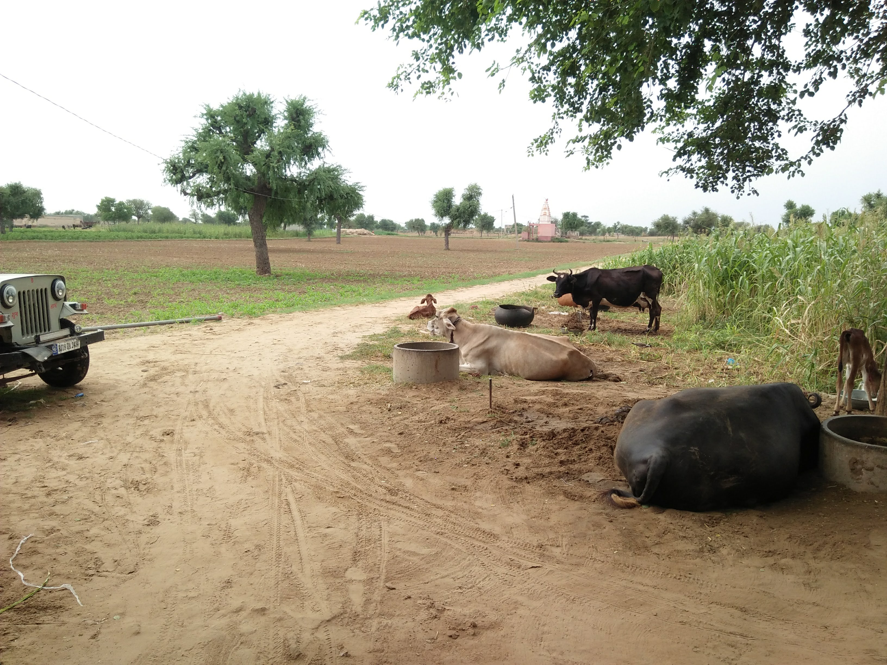

Nilambag palace
Aug 09, 2018
It is a Nilambag Palace Hotel Bhavnagar. In, that day was freshers party. The city of Bhavnagar is located in the Saurashtra Region of Gujarat. In the heart of this bustling urban city is the beautiful Nilambag Palace Hotel. In the year 1879, Maharaja Saheb Takhatsinhji of Bhavnagar commissioned the German architect, Simms to design the Nilambag Palace that for generations has remained the home of the erstwhile royal family of Bhavnagar. An imposing Rajula stone structure, the Palace was constructed with influences of Colonial architecture. Nilambag is a unique amalgamation of regal grandeur and functional magnificence.

BAPS Shri Swaminarayan Temple
Sep 03, 2017
I remember the day. That was sunday/funday with Amit in Aksharwadi Temple. Aksharwadi Temple, dedicated to Lord Swaminarayan, serves as a place for enlightenment as well as education and entertainment for many years. From the main temple to gardens, each and every element related to the shrines echoes spirituality. This intricately carved structure, built by the society of BAPS Shri Seva Sansthan, contains various terracotta works, wall paintings and idols of many deities including Kanhaji's cradle (Lord Krishna).

Shirdi Sai Baba
Oct 21, 2017
It was so nice to be where we were staying.It is a Shirdi sai baba guest House.Yes there were more good Imagé structures,and I liked all the photos there.Yes, I still remember that day beacuse I was with my family.why I have gone to Shirdi many times beacuse longest travel Much more to like.

Guest House,Shirdi
Oct 21, 2017
“It is better to conquer yourself than to win a thousand battles. Then the victory is yours. It cannot be taken from you.” -Buddha
- #jay Buddha Dev...
It was so nice to be where we were staying.It is a Shirdi sai baba guest House.

Dandi Beach
June 12, 2019
It is true that any place with a friend can also be a Hilarity.
- Have fun with Friends...
Two monuments of Mahatma Gandhiji are placed in Dandi Beach to express the importance of Dandi Beach in the history of India. One monument is like the India gate commemorating the success of Gandhi breaking the salt law. The next monument is the statue of Gandhi holding the saline mud.

Aduka,Rajasthan(Nani House)
July 5, 2019
- केसरिया बालम आओ नि पधारो म्हारे देस ...
- Went to get milk